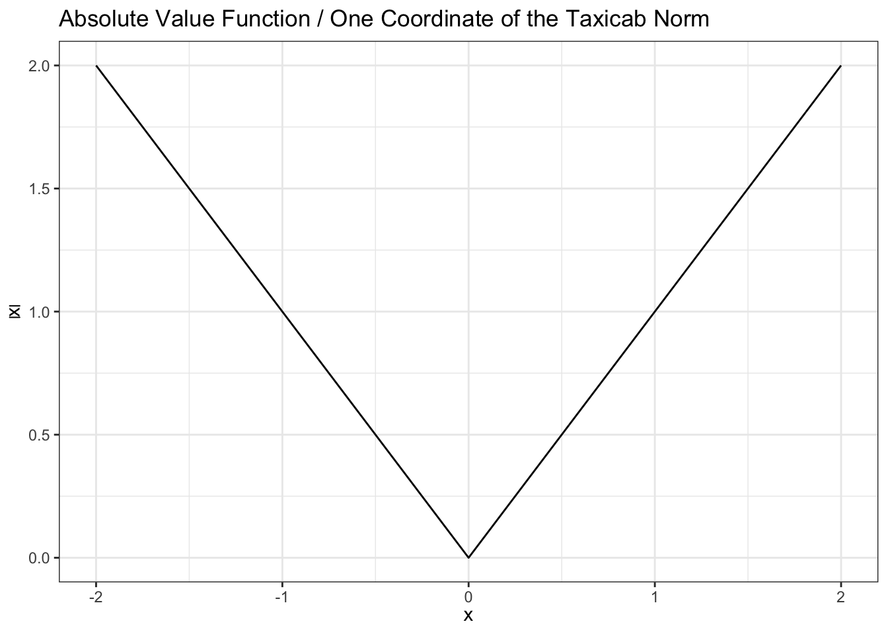
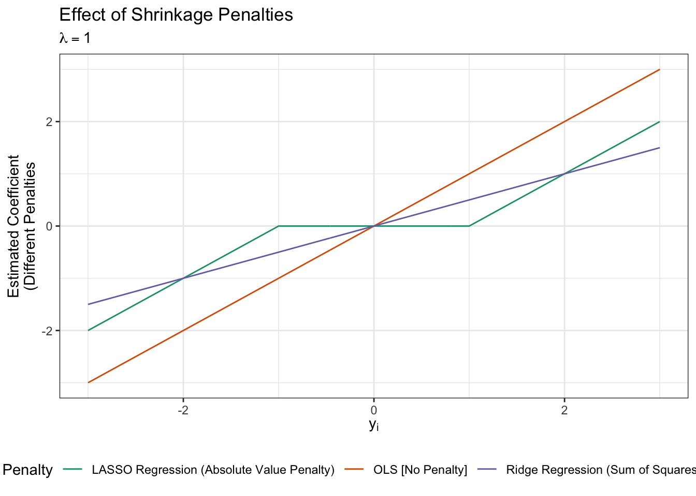

Notes for Lecture #10: Unit II. Regression: Stability Approaches in Applied Machine Learning
Outline:
The LASSO
Last time, we argued that we could use the “zero-norm”:
\[\|\bx\|_0 = \text{Number of Non-Zero Elements of } \bx\]
to characterize sparse models. Specifically, recall that the \(\|\cdot\|_0\) norm works like:
\[\begin{align*} \|(1, 2, 3)\|_0 &= 3 \\ \|(0, 0, 0)\|_0 &= 0 \\ \|(0, 2, 0)\|_0 = 1 \end{align*}\]
Like the sum-of-squares norm that we used for ridge regression, this captures a notion of ‘not too big’-ness (and makes a bias-variance gambit), but instead of judging a model by how big its coefficients are, it judges it by how many coefficients it uses. We saw that ridge regression had the ability to ‘automatically’ make our model coefficients smaller and only make them big when the data demanded it (at a price of \(\lambda\)); use of the \(\ell_0\)-norm will do the same thing.
In our constrained form, this looks like:
\[\argmin_{\substack{\bbeta \in \R^p \\ \|\bbeta\|_0 \leq k}} \text{TrainingMSE}(\bbeta).\] Here, we’re saying find me the best linear model using no more than \(k\) of the total \(p\) features as measured by training MSE. As with ridge regression, this is a hard constraint and will never select more than \(k\) features.1 We can translate this to ‘penalty’ form:
\[\argmin_{\bbeta \in \R^p} \text{TrainingMSE}(\bbeta) + \lambda \|\bbeta\|_0.\]
Here, we will include a feature if and only if it reduces our Training MSE by \(\lambda\) or more over the next best alternative. (Can you argue why?)
Many of the model selection tools you have seen in previous courses are instances of this set-up, which is generally called ‘best subsets’ because we seek the best subset of \(k\) predictors (again, as measured by Training MSE). Things like forward stepwise or backward stepwise model selection are algorithms that attempt to solve the above problems, typically based on some theoretically driven (\(p\)-value, \(F\)-test, ANOVA, etc) choice of \(\lambda\).
This is all well and good for simple problems, where brute force can be sufficient. With \(p\) possible features, an exhaustive search requires us to solve \(2^p\) different OLS problems. At the scale of \(p\approx 10-20\), this may not be completely unrealistic for small data sets where the individual OLS fits are near instant. (Applying OLS to the penguins data \(2^20\) times takes a bit under 8 minutes on my laptop.) But as problems get bigger and bigger, this quickly becomes essentially impossible.
First order (gradient) methods don’t really help here, because the gradient of \(\|\cdot\|_0\) gives us no information. (Recall that it is flat everywhere except \(0\) where it jumps down by 1 at a single point.) So it is hard to beat the ‘wander around randomly trying things’ strategy in a systematic fashion.
This leaves us with a set of alternatives: we can either
- Solve the exact best-subsets problem approximately; or
- Solve an approximation to best-subsets exactly.
(I suppose we could also solve the approximation approximately, but we don’t typically need to go quite that far.) As mentioned above, you already know some approaches for approximate solves for the exact problem, so now let’s look instead at how we might approximate the best-subsets problem.
In approximating the best subsets problem, what are we looking for? We want to find another similar problem that is:
- Easy to solve with first order methods
- Has a solution that is ‘close’ to the best-subsets problem
- Inherits the desirable properties of best subsets (automatic model selection)
Ridge regression actually gets us surprisingly close: it’s certainly easy to solve and typically gives us a solution with many small values. It’s not unreasonable to think that we could just ‘throw away’ the small values, keeping the larger ones. This – “thresholded ridge” – is a viable strategy more often than textbooks might suggest, but it still has some problems:
- We now have two knobs (how much ridge + how small is small enough to safely discard) to tune
- Ridge typically pushes many features down to zero at the same rate
Because ridge cares much more about the difference between 10 and 11 (\(11^2 - 10^2 = 21\)) than 2 and 1 (\(2^2 - 1^2 = 3\)), ridge regression will put the bulk of its shrinkage activity on the biggest coefficients, leaving the ‘reasonably small’ things alone until \(\lambda\) is quite large. This is exactly the opposite of what we want. We’d much prefer a model that puts its shrinkage into the small coefficients, leaving the larger values unscathed.
Sadly, this is not quite doable, but we can at least find a closely related problem that shrinks everything, high and low, at the same rate. Our hope here, is that a large value, say 11, is shrunk to 10, but a small value, say 1, gets pushed all the way to 0. In essence, we want a ‘bigness’ measure that is essentially linear in the inputs.
And we have one! Remember back a few lectures when we talked about different vector ‘norms’ - measures of bigness or size. At the time, we looked at our ‘Euclidean’ (\(\ell_2\))
\[\|\bx\|_2^2 = \sum_i x_i^2\]
distance because it was geometrically familiar and ‘played nice’ with the squares of least squares, but we also had our taxicab (Manhattan or \(\ell_1\)) norm:
\[\|\bx\|_1 = \sqrt[1]{\sum_i |x_i|^1} = \sum_i |x_i|\]
That is, the sum of the absolute values of \(\bx\). If we plot the absolute value function, we see that it has exactly that linear type of behavior we wanted:
If we use something like this as a penalty, it should stand a much better chance at ‘zeroing’ out coefficients (like \(\ell_0\)) while still being something we can actually solve efficiently (like \(\ell_2\) / ridge).2
And, mirabile dictu, this heuristic argument not only works, but works well and gives us a problem that we can solve efficiently. I present you with the LASSO:
\[\argmin_{\bbeta} \text{TrainingMSE}(\bbeta) + \lambda \|\bbeta\|_1 = \argmin_{\bbeta} \text{TrainingMSE}(\bbeta) + \lambda \sum_{i=1}^p |\beta_i|\]
For \(\lambda \to 0\), like ridge, we get back to OLS, but as \(\lambda\) gets large we’ll actually get exact zeros out. (This is actually the ‘easy to solve’ problem that is closest to best squares and so we call it the ‘tightest relaxation’.) It lives on the magic margin of ‘easy to solve’ while also ‘giving exact zeros’, a territory occupied by nothing else.
So what is LASSO? Well, it is firstly a somewhat janky acronym for the Least Absolute Selection and Shrinkage Operator:
- Least. We will apply this as a ‘bolt-on’ to our general minimum training error / ERM paradigm.
- Absolute. We penalize according to absolute values, not squares.
- Selection. This will automatically select certain coefficients and zero out others
- Shrinkage. While this will only push some features all the way to zero, it will push the rest towards zero, doing a bit of a bias-variance gambit on all features, even the ones it keeps.
- Operator. Generic math word to make the acronym work.
While on the nice end of the math spectrum, this is still not quite as simple as OLS and ridge regression, so we do need to use an iterative algorithm to find the solution. The glmnet package that we used for ridge regression can also solve LASSO problems and, indeed, was originally developed for LASSO-type problems.
We start with the same data as before:
# Generated with help of Gemini
library(readr)
library(dplyr)
library(stringr)
library(tidytext)
library(tidyr)
library(glmnet)
# 1. Ingest static TidyTuesday snapshot
raw_wine <- read_csv(
"https://raw.githubusercontent.com/rfordatascience/tidytuesday/main/data/2019/2019-05-28/winemag-data-130k-v2.csv",
show_col_types = FALSE
)
# 2. Subsample to create a controlled p > n setting (n = 100)
set.seed(3106)
wine_sample <- raw_wine |>
filter(variety == "Pinot Noir", !is.na(points), !is.na(description)) |>
slice_sample(n = 100) |>
mutate(wine_id = row_number()) |>
select(wine_id, points, description)
# 3. Tokenize, strip stopwords/digits, and prune singletons
tidy_words <- wine_sample |>
unnest_tokens(word, description) |>
anti_join(stop_words, by = "word") |>
filter(!str_detect(word, "^[0-9]+$"))
frequent_words <- tidy_words |>
distinct(wine_id, word) |>
count(word) |>
filter(n >= 2)
# 4. Reshape to wide DTM via pivot_wider()
dtm <- tidy_words |>
semi_join(frequent_words, by = "word") |>
count(wine_id, word) |>
pivot_wider(
names_from = word,
values_from = n,
values_fill = 0
)
# 5. Build design matrix X and continuous target y
aligned <- wine_sample |>
select(wine_id, points) |>
inner_join(dtm, by = "wine_id")
X <- aligned |> select(-wine_id, -points) |> as.matrix()
y <- aligned$pointsNext, we apply glmnet, but here we set alpha=1 (or just leave it unspecified since \(\alpha=1\) is the default) to fit the LASSO:
# A tibble: 4 × 5
term step estimate lambda dev.ratio
<chr> <dbl> <dbl> <dbl> <dbl>
1 (Intercept) 1 88.7 1 0.0433
2 black 1 0.365 1 0.0433
3 concentrated 1 0.146 1 0.0433
4 structured 1 0.110 1 0.0433From here, we see that at \(\lambda=1\), only three features (three words) are selected and to a non-oeniphile, they seem pretty reasonable to me.
As with ridge regression, getting the right value of \(\lambda\) is a tricky problem. Before we do this, let’s note that glmnet provides several nice “multi-\(\lambda\)” features. In particular, glmnet will
- Automatically find the value of \(\lambda\) that makes all your coefficients zero and stop there (so-called \(\lambda_{\max}\))
- Solve for a wide range of \(\lambda\) ending at \(\lambda_{\max}\)
- Do so in a clever way that makes solving at 100 different \(\lambda\)’s almost as fast as solving at a single \(\lambda\):
This looks similar to the regularization paths we saw for ride regression, but with some interesting differences:
- The paths are a bit ‘pointier’: while the ridge paths were smooth, here we see some artifacts of the ‘sharp corner’ in the absolute value penalty
- The paths eventually hit zero and stop. This is exactly the shrinkage we expect! While it is possible for a feature to hit zero for a while and then ‘reactivate’ (possibly even with a different sign!), the typical behavior is for a feature to be shrunk ‘out of existence’ permanently.
- We can now make some sense of the values along the top. These measure the number of non-zero coefficients. At the left side of the plot, where \(-\log(\lambda)\) is small \(\leftrightarrow\) \(\lambda\) is large, we see that most features are ‘zeroed out’ and only a few remain. As we move to the right, more and more features get ‘activated’, until we stop at \(n=p\) total features. (We will never select more than \(n\) features.)
When talking about ridge, we found that the \[\hat{\beta} = (\bX^{\top}\bX + \lambda \bI)^{-1}\bX^{\top}\by \approx \frac{SS_{XY}}{SS_{XX} + \lambda}\] ‘metaphor’ was helpful to demonstrate the form of shrinkage. We can’t get a nice expression like that for LASSO (and remember that was even a bit informal for ridge) except in one very special case. If
\[\bX = \begin{pmatrix} 1 &0 & 0 & \dots & 0 \\ 0 & 1 & 0 & \dots & 0 \\ 0 & 0 & 1 & \dots & 0 \\ 0 & 0 & 0 & \ddots & 0 \\ \vdots & \vdots & \vdots & \vdots & \vdots \\ 0 & 0 & 0 & \dots & 1 \end{pmatrix}\]
we have an exact solution:
\[\hat{\beta}_i = \begin{cases} y_i - \lambda & y_i > \lambda \\ 0 & 0 & |y_i| \leq \lambda \\ y_i + \lambda & y_i < -\lambda \end{cases}\]
It’s a bit easier to compare this to the ridge solution \(\hat{\beta}_i = y_i / (1 + \lambda)\) and the OLS solution \(\hat{\beta} = y_i\) visually:

Unsurpisingly, the OLS penalty is a straight-line and the ridge penalty is a ‘flattened’ version of that same line. (Why?) The LASSO effect is a bit more interesting. Near \(0\), we see that it gives gives more shrinkage than ridge and indeed zeros things out. Farther away (large values), we see less shrinkage. So it seems that the LASSO indeed is giving us what we want: a bit more shrinkage, leading to actual selection (zeroing) of small values, near zero while putting a bit less of a thumb on thescale to shrink large values.
Is this helpful? It depends what we believe about the world. If we believe that there are a few strong effects and a lot of ‘true zeros’, this is clearly a reasonable modeling choice. But those situations are definitely not the norm: in our wine example, do we expect that there are a few ‘magic’ words and no other words have any ability to predict the final score? Not really…
In these situations, the benefits of sparsity are interpretational and practical:
- What are the most important words? These are hopefully the last ones that the LASSO will discard.
- If we can only use a few features for engineering-type reasons (speed, cost of data collection, interpretability), which ones should we use?
While we do have good rules of thumb for picking a good \(\lambda\) (more to follow), it is often just as useful to look at the order that the Lasso picks and selects features.
# A tibble: 123 × 4
term final_lambda sign rank
<chr> <dbl> <dbl> <int>
1 black 1.11 1 63
2 concentrated 1.01 1 62
3 structured 1.01 1 62
4 power 0.838 1 61
5 tea 0.800 1 60
6 vines 0.800 1 60
7 funky 0.764 1 59
8 complex 0.729 1 58
9 texture 0.696 1 57
10 cream 0.664 1 56
# ℹ 113 more rowsHere, I have pulled out each coefficient (each word) and found the largest lambda at which it is still nonzero. After looking at the sign of its coefficient, I have ranked them by LASSO-implied usefulness (higher final \(\lambda\) implies the feature ‘held on’ longer implies more important). The results seem to be reasonable-again, with little knowledge of wine culture.
So what is actually important under this sort of lasso ranking? Well, predictive utility (clearly, as we are still basically doing ERM) is the baseline, but we can temper this a bit:
As always, predictive power is not necessarily ‘true causal’ effect (kids shoes and IQ), but it is suggestive
-
When we have strongly correlated features, lasso will pick one more or less at random. (Think: left and right shoe sizes vs IQ in children. LASSO will be happy with just one (again, basically at random) since the difference between them is miniscule.) Contrast this to ridge which will ‘split the difference’ and include both at a smaller coefficient value.
The ridge behavior is a bit more robust here (if one feature ‘goes weird’ and takes an abnormal value, ridge will react about half as much as lasso might since it averages them), but lasso clearly wins on parsimony.
From the above, LASSO will do a bit better when there isn’t much correlation among the features. This is theoretically quite nice - and useful in some limited experimental settings - but under our ‘many features occur when we measure many related things’ heuristic, the practical value of this is only so-so.
Overall, LASSO and related methods are rarely the last word in knowing what “truly matters”, but it provides us a quick, efficient, and easy-to-use framework that does about as well as any sparse method could do.
Tuning LASSO
Ok, enough flim-flammery, how do we actually pick \(\lambda\)? If we really just need to commit to one, we need some guidance.
TODO
Footnotes
And because more features essentially always helps, this will essentially always select exactly \(k\) features.↩︎
A bit more technical, but it’s worth thinking about what happens to a value of \(\beta\) that the data suggests is small; the OLS squared term will have a gradient proportional to \(\beta\) (derivative of squared term is linear) while the derivative of the absolute value will always be \(\pm 1\) (whichever pushes towards the zero point). Hence, the absolute value will push ‘harder’ than the MSE term, giving us exact zeros. Contrast this to ridge, where we have have two terms both with a linear gradient; one (data/MSE) pushes us away from zero, while the other (ridge penalty) pushes us towards zero and we have no reason to think we’ll land exactly on zero.↩︎